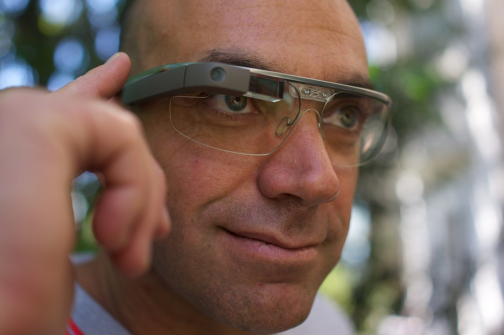

Google Glass
Google Glass — гарнитура для смартфонов на базе Android, разработанная компанией Google. В устройстве используется прозрачный дисплей, который крепится на голову (англ. head-mounted display, HMD) и находится чуть выше правого глаза, с камерой, способной записывать видео высокого качества. Тестирование продукта началось в апреле 2012 года, а New York Times сообщала о новинке ещё в конце февраля 2012 года. Прототипы гарнитуры модели Explorer Edition стоимостью $1500 были переданы разработчикам программного обеспечения на мероприятии Glass Foundry в феврале 2013 года. Общественности данная гарнитура стала доступна 15 мая 2014 года по той же цене.
15 января 2015 Google объявила об остановке производства Glass в текущем состоянии, при этом отметив, что продукт закончил свою экспериментальную стадию в Google Labs. Разработка и производство продукта переносится в другое подразделение.
Glass на нынешнем этапе развития не является ни смартфоном, ни очками. Первоначально Glass разрабатывалась в лаборатории Google X, а менеджером проекта по сегодняшний день является Бабак Парвиз, который также следит за интеграцией систем картографического отслеживания местности.
Взаимодействие Glass с пользователем осуществляется через голосовые команды (базовой является команда «Ok, Glass», после которой должна идти просьба выполнить какую-либо функцию; кроме того, через гарнитуру можно надиктовывать тексты), жесты, распознаваемые тачпадом, который расположен на дужке за дисплеем, и систему передачи звука с использованием костной проводимости. Интерфейс устройства был продемонстрирован Google в опубликованном в феврале 2013 года видео, а уже в марте компания использовала выставку SXSW Interactive для показа первых приложений для Glass от сторонних разработчиков. Производитель работает над образцом гарнитуры для людей, носящих корректирующие зрение очки, которая будет обладать «модульной» конструкцией с возможностью подбора необходимых линз и оправ.
Концепция Google Glass в конечном счёте должна реализовывать одновременно три отдельные функции, сведя их воедино: дополненную реальность, мобильную связь + интернет, видеодневник. Первая версия очков полноценно реализует видеодневник и лишь частично дополненную реальность и коммуникационную составляющую. В последующих версиях возможна более полноценная реализация всех трёх целевых составляющих.